Comte Zéro
#science-fiction
Mona Lisa disjoncte
#science-fiction
Le Chant du monde
#roman
L'Homme qui plantait des arbres
#nouvelles
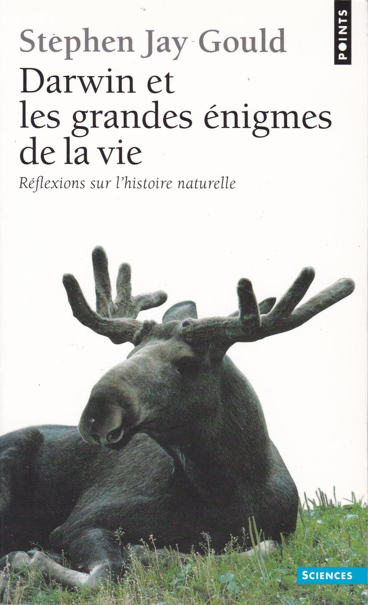
Darwin et les grandes énigmes de la vie
#essai
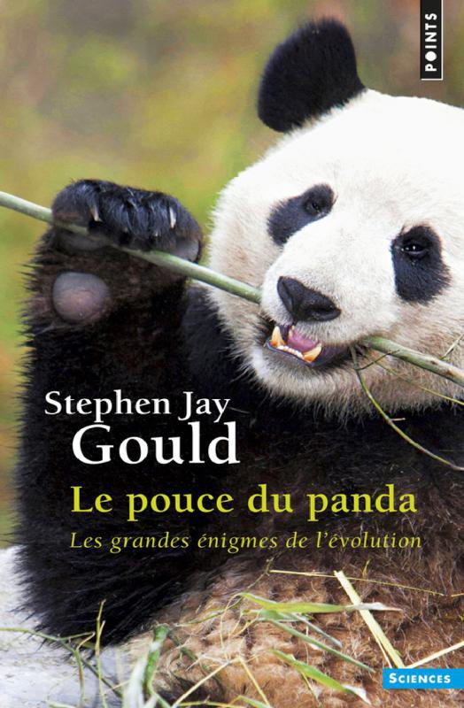
Le Pouce du panda
#essai
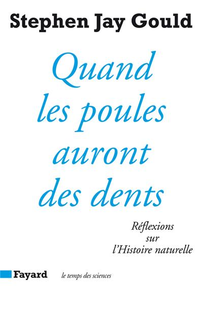
Quand les poules auront des dents
#essai
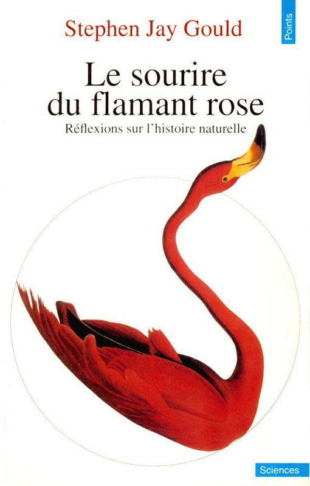
Le Sourire du flamant rose
#essai
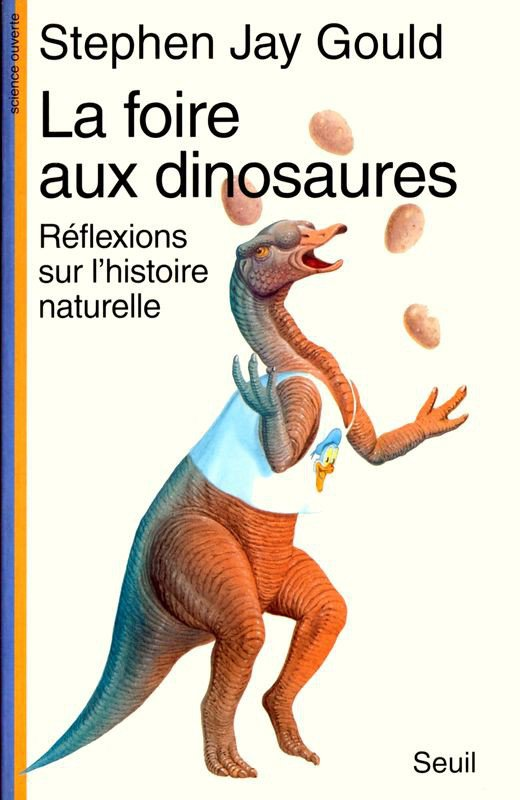
La Foire aux dinosaures
#essai
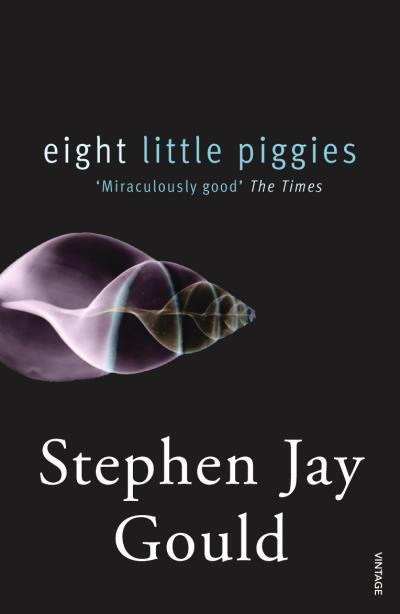
Comme les huit doigts de la main
#essai
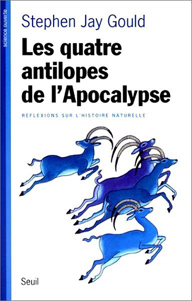
Les Quatres antilopes de l'apocalypse
#essai
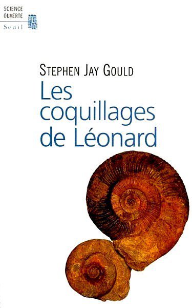
Les Coquillages des Léonard
#essai
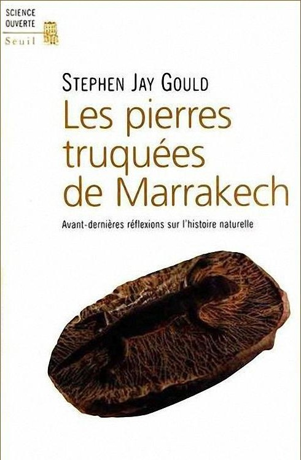
Les Pierres truquées de Marrakech
#essai
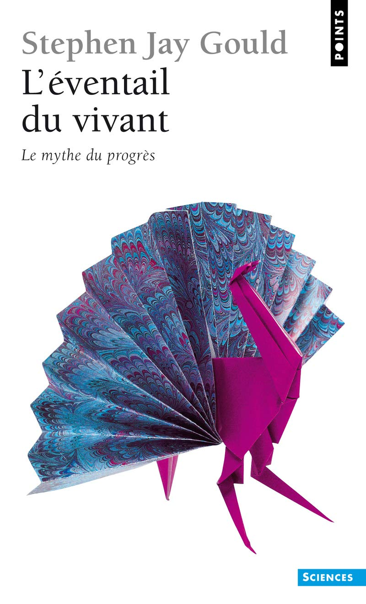
L'Eventail du vivant
#essai
Dette - 5000 ans d'histoire
#essai
Bureaucratie, l'utopie des règles
#essai
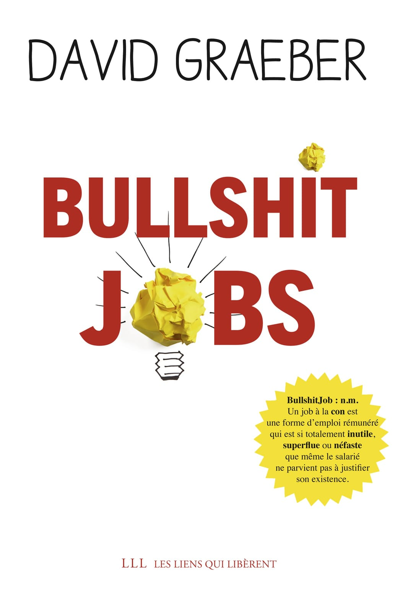
Bullshit Jobs
#essai
Le Vol des cigognes
#thriller
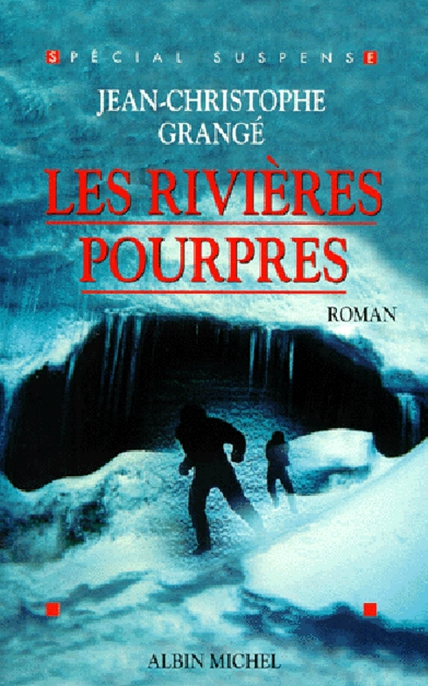
Les Rivières pourpres
#roman-policier
Le Concile de pierre
#roman-policier